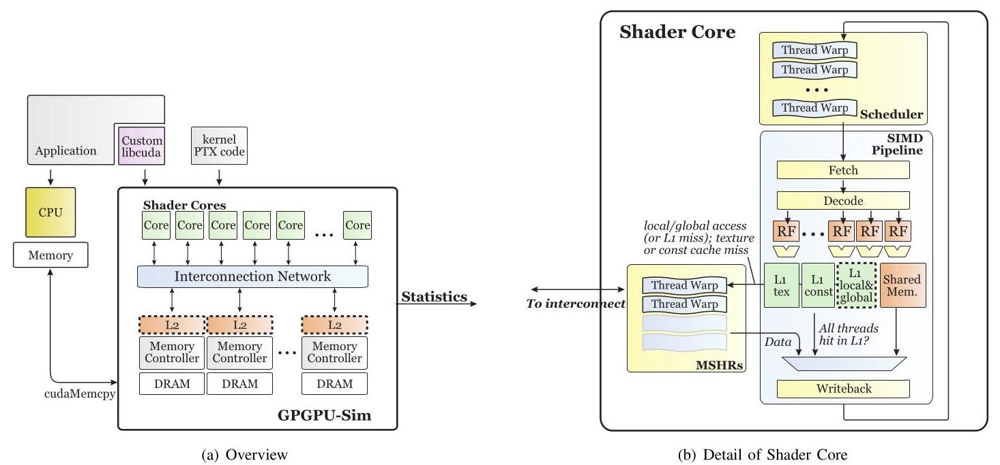
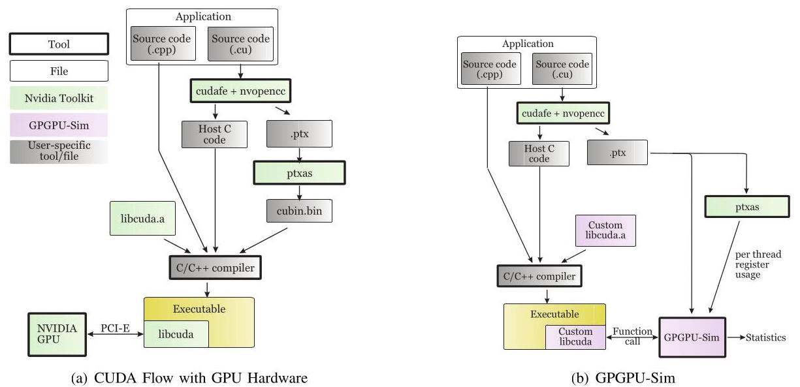
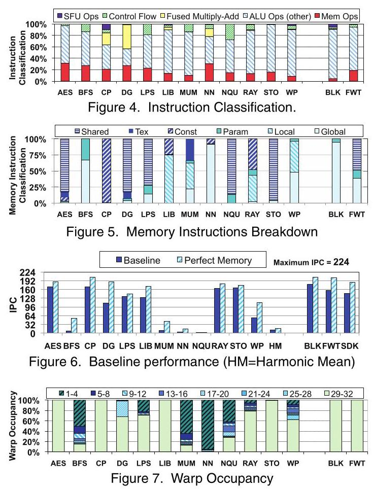
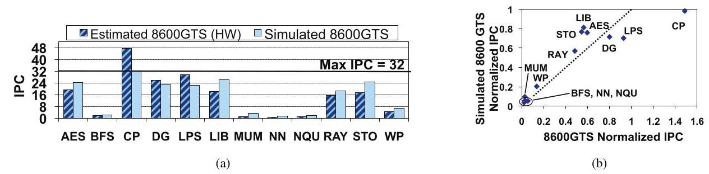
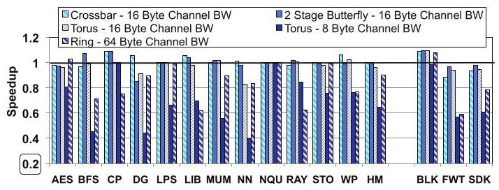
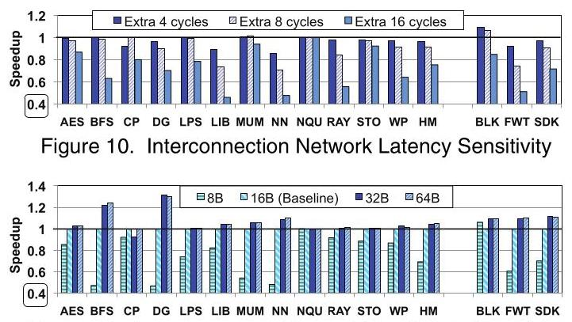
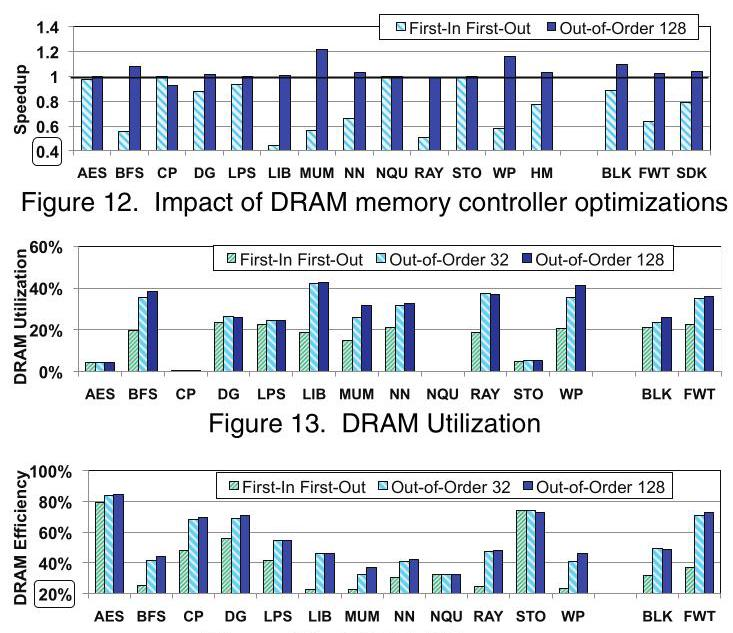
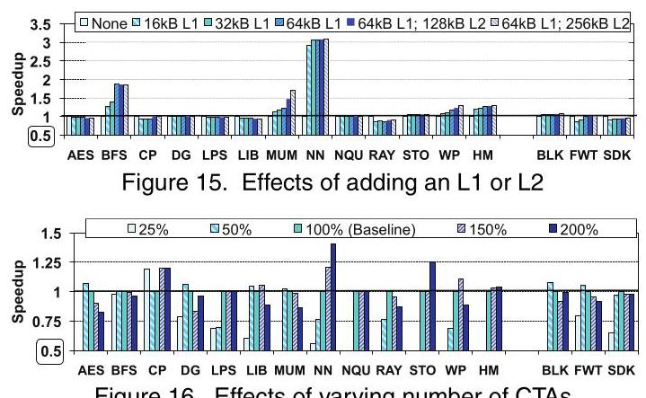
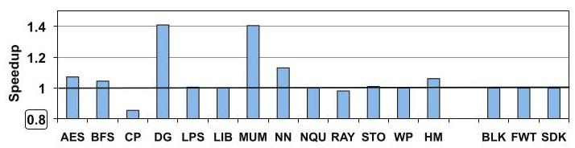

Analyzing CUDA Workloads Using a Detailed GPU Simulator 深度解读
作者：Ali Bakhoda, George L. Yuan, Wilson W. L. Fung, Henry Wong, Tor M. Aamodt
会议/年份：IEEE International Symposium on Performance Analysis of Systems and Software (ISPASS), 2009
一句话总结：这篇论文通过扩展 GPGPU-Sim 支持 CUDA/PTX，对 12 个非图形 CUDA workload 做微架构级仿真，指出 GPU 应用性能常常更受 interconnect bandwidth、DRAM contention、CTA 并发度和访存合并策略影响，而不是单纯受峰值算力或零负载延迟支配。
一、问题定义
这篇论文处在 CUDA 刚出现不久的时间点：NVIDIA 已经把 GPU 从固定图形流水线推向可编程的 SIMT 并行处理器，CUDA 让程序员用接近 C 的方式表达大量线程，但当时对“非图形 CUDA 程序为什么跑不满 GPU”仍缺少可控、细粒度的体系结构解释。真实 GPU 可以测 runtime，却很难系统地改变 interconnect topology、router latency、cache 层次、memory controller policy、CTA 并发资源等硬件参数；传统图形 GPU 模拟器又多聚焦 graphics pipeline，不能直接承载 CUDA/PTX workload。
本文要解决的核心问题是：如何用一个足够详细、能运行真实 CUDA 程序的 GPU simulator 来刻画非图形 CUDA workload 的性能瓶颈，并用它回答一些硬件设计问题，例如 interconnect 应该优先优化 latency 还是 bandwidth、cache 是否总有收益、是否应该尽可能塞满更多 CTA、以及更激进的 memory coalescing 是否值得。
动机评估：动机是 solid 的。论文不是泛泛声称 GPU 很快，而是特意选取当时 CUDA Zone 中 reported speedup 低于 \(50\times\) 的应用，因为这些应用更可能暴露硬件/软件调优空间。它还避免只看 microbenchmark，而是选择 AES、BFS、CP、gpuDG、LIBOR、MUMmerGPU、ray tracing、weather prediction 等 12 个非平凡 CUDA 应用，再加部分 SDK 程序作对照。这个 workload 集合虽然以 2007-2009 年的 CUDA 生态为背景，但问题本身很真实：GPU 峰值吞吐和实际应用效率之间存在明显缺口。
核心 Insight：本文的关键洞察是，GPU 性能不是“更多线程 + 更低延迟 + 更多 cache”这类单调关系。SIMT 机器用大量 warp 隐藏延迟，但这些 warp 同时也会在 interconnect、DRAM controller、cache miss queue 和 shared resource 上制造 contention。因此更高并发度可能降低性能；更大 cache 可能因 write miss/dirty eviction 反而拖慢；interconnect 的 bisection bandwidth 在很多 workload 上比 router latency 更关键。这一 insight 直接驱动了论文的实验设计。
二、相关工作
论文的 related work 可以分为四类。
第一类是 graphics-oriented GPU simulator，例如 Qsilver 和 ATTILA。这类工具能模拟图形架构的一些执行行为，但要么不建模 programmable shader，要么重点仍在 graphics-specific feature，无法回答 CUDA/PTX 非图形程序在微架构参数变化下的性能问题。
第二类是 CUDA 应用优化和 GPU 上的科学计算实践，例如 Ryoo 等人的 CUDA 优化研究。这些工作在真实 NVIDIA 8800GTX 等硬件上优化程序，能说明某些代码优化策略有效，但不能自由替换 interconnect、memory controller 或 cache 层次，因此对硬件设计空间的解释能力有限。
第三类是其他 accelerator 或 stream processor 架构，例如 xPU、Cell、Merrimac、Imagine、UltraSPARC T2 等。这些系统体现了多线程、SIMD、streaming 或专用加速方向的不同设计取舍，但它们的 programming model 与 CUDA/SIMT 不同，不能直接解释 CUDA workload 在 contemporary GPU 上的瓶颈。
第四类是本文所用 CUDA benchmark 的原始应用论文。这些论文关注各自应用如何利用 GPU 加速，而不是横向比较这些应用在 cache、DRAM、interconnect、CTA scheduling 等硬件参数上的敏感性。本文的定位就是补上这块空白：用同一个详细模拟框架统一观察这些 workload。
三、技术挑战
挑战 1：既要真实运行 CUDA 应用，又要能做微架构探索。 如果要求开发者手工改写应用到某个研究 ISA，workload 覆盖面会很窄；但如果只跑真实硬件，又无法替换硬件参数。本文需要在二者之间建立桥梁：接入 CUDA compilation flow，运行 PTX，并把 PTX 的资源需求映射到模拟器中的 shader core、register、shared memory、warp scheduler 等结构上。
挑战 2：GPU 性能瓶颈高度 workload-dependent。 AES、STO 这类大量使用 shared memory 的程序与 BFS、MUM、WP 这类 memory/divergence heavy 程序完全不同。一个平均结论很容易掩盖个别应用的瓶颈，因此实验必须同时报告整体趋势和 workload-by-workload 行为。
挑战 3：SIMT 并发既隐藏延迟，也制造争用。 传统直觉会认为更多 active warp/CTA 更好，因为能覆盖 memory latency。但在 GPU 中，更多 CTA 也会增加 outstanding memory request、interconnect traffic 和 DRAM row/bank pressure。要解释这个非单调关系，仿真器必须能追踪 CTA distribution、memory queue、DRAM efficiency 和 warp occupancy。
挑战 4：cache/coalescing/DRAM policy 的效果不能只看命中率或峰值带宽。 例如 local/global cache 对某些应用可加速，对 write miss 和 dirty eviction 行为不友好的应用则可能减速；inter-warp coalescing 可以减少重复请求，但需要大容量、可关联查找的 outstanding miss 结构。论文必须把这些机制放进完整执行中评估。
挑战 5：仿真结果需要可信度校验。 研究模拟器如果完全不对照真实硬件，结论容易变成模型内自洽。本文用 GeForce 8600GTS 配置做相关性验证，虽然无法完全复刻 ptxas 后端优化，但至少证明模拟器能区分真实硬件上高性能和低性能应用。
四、解决方案
整体思路
本文的方案是扩展 GPGPU-Sim，使其能运行 NVIDIA PTX 虚拟指令集，并用它模拟一个类似当时高端 GPU 的 SIMT 微架构。模拟器包含多个 shader core、warp scheduler、SIMD pipeline、shared/constant/texture/global/local memory、interconnection network、memory controller、DRAM timing、cache 与 coalescing 机制。随后作者围绕几个硬件设计轴做 controlled experiments：interconnect topology/latency/bandwidth、DRAM controller、L1/L2 cache、CTA 并发资源、inter-warp memory coalescing。

Fig. 1 展示了本文的建模边界：CPU 端负责启动 kernel 和 cudaMemcpy，GPU 端由多个 shader core 通过 interconnect 访问 memory controller/DRAM；单个 shader core 内部有 warp scheduler、SIMD pipeline、register file、shared memory、texture/constant cache，以及论文探索中可选的 local/global L1 与 MSHR-like 结构。这个图很关键，因为后续实验的每个变量都能映射到这里的某个硬件部件。
贯穿示例
可以用 MUMmerGPU 作为贯穿例子来理解本文。MUMmerGPU 做 DNA sequence alignment，每个 CUDA thread 查询一段字符串，参考 suffix tree 放在 texture memory 中。程序编译时，CUDA frontend 生成 host C 和 PTX；GPGPU-Sim 链接自定义 libcuda.a，拦截 kernel launch，读取 PTX 并根据 ptxas 得到的 register/shared memory 用量决定每个 shader core 能放多少 CTA。执行时，warp scheduler 以 32-thread warp 为单位发射，thread 的数据依赖查询会产生不规则访存和 branch divergence，请求经 coalescing、cache、interconnect 进入 DRAM。于是同一个 MUM workload 可以在不同 cache、大/小 CTA 并发度、不同 interconnect bandwidth、是否开启 inter-warp coalescing 下反复运行，直接暴露“并发越多越好吗”“访存合并是否有价值”等问题。
关键技术点
CUDA/PTX 支持：论文修改 CUDA build flow，不再链接 NVIDIA 提供的 libcuda.a，而是链接 GPGPU-Sim 的 custom libcuda.a。这样普通 CUDA 应用仍经过 cudafe/nvopencc 生成 PTX，但 kernel launch 会进入模拟器。模拟器解析 PTX，使用 immediate post-dominator 分析标注 branch reconvergence point，并用 functional simulator 按 performance simulator 的调度顺序执行多线程指令。

Fig. 3 说明了本文最实用的工程贡献：CUDA 源码、PTX 生成流程大体保留，差异集中在链接自定义 runtime stub 和模拟器解析 PTX。作者还用 ptxas 获取每线程 register 用量和每 CTA shared memory 用量，避免 PTX 虚拟寄存器数量过大导致 occupancy 模型失真。
Baseline GPU 模型：默认配置包含 28 个 shader core，warp size 为 32，SIMD pipeline width 为 8，因此理想最大 scalar IPC 为 \(28 \times 8 = 224\)。每个 shader core 使用 24-stage in-order pipeline，warp 每 4 cycles 发射到 8-wide SIMD pipeline。baseline 有 16KB per-core shared memory、8KB constant cache、64KB texture cache、8 个 memory channel，local/global access 默认不经 L1/L2 cache。
Interconnect 与 DRAM 建模：作者建模 mesh、torus、butterfly、crossbar、ring 等 topology，并改变 flit/channel bandwidth 与 router latency。DRAM controller 方面，baseline 是 OoO FR-FCFS，另比较 FIFO 与更大输入队列的 OoO128。这样可以把“网络延迟”“网络带宽”“DRAM row locality”和“controller queue capacity”分开观察。
CTA distribution 与 resource scaling：本文用 breadth-first heuristic 把 CTA 分配给当前 CTA 数最少的 shader core，并通过缩放 threads/registers/shared memory/CTA slots 到 baseline 的 25%-200% 来改变每 core 可同时运行的 CTA 数。这让作者能在不改源代码的情况下评估 occupancy 与 contention 的关系。
Memory coalescing 与 cache：baseline 尝试将一个 warp 内 32 个 thread 的访存合并；进一步实验 inter-warp coalescing，即后续 warp 如果请求已有 outstanding request 覆盖的数据，就合并到同一请求上。cache 实验则加入 local/global L1 以及 memory-side L2，但模型是 non-coherent cache，适用于作者所选“不通过 global memory 跨 CTA 通信”的程序。
与已有方案的对比
相比真实硬件测量，本文牺牲了一些后端实现细节准确性，但换来可控的硬件参数扫掠；相比 graphics GPU simulator，它能运行 CUDA/PTX 非图形应用；相比手写 microbenchmark，它覆盖真实应用并模拟到 completion。局限也很明确：模型基于 CUDA 1.1/GeForce 8 时代，host code 不计入性能，PTX 到真实 ISA 的 ptxas 优化无法完全复刻，CTA load imbalance 在小 grid 上会引入一些模拟器/调度策略相关现象。
五、实验评估
实验设定
论文选择 12 个 CUDA 应用：AES、BFS、CP、gpuDG、LPS、LIBOR、MUMmerGPU、NN、N-Queens、Ray Tracing、StoreGPU、Weather Prediction，并额外模拟若干 CUDA SDK 程序，以 BLK、FWT 和 SDK harmonic mean 作为对照。作者模拟所有 benchmark 到 completion，避免只观察 kernel 前半段而漏掉 tail behavior。baseline 硬件参数如上所述，实验指标主要是 scalar IPC、speedup、warp occupancy、DRAM utilization/efficiency 等。

Fig. 4-7 是理解 workload 差异的入口。ALU 占比很高并不自动代表高 IPC，memory type 和 warp occupancy 更能解释瓶颈。例如 CP 超过 99% 访存到 constant memory，NN 大量访问 global memory；MUM 超过 60% 的 warp 少于 5 个 active threads，BFS 超过 75% 的 warp occupancy 低于 50%。这说明 branch divergence、unfilled warp 和 memory behavior 必须一起看。
主要实验与结论
模拟器可信度：作者把模拟器配置成类似 GeForce 8600GTS 的 4 shader、2 memory controller，并和真实硬件估算 IPC 对比，得到相关系数 0.899。CP 在真实硬件上 normalized IPC 超过 1，作者认为可能来自 ptxas 在真实后端减少了指令数，而模拟器只执行 PTX。这个验证不能证明绝对周期完全准确，但足以支撑“高/低性能应用排序大体可信”。

Fig. 8 的价值在于校验模型方向性：BFS、MUM、NN、NQU 在真实硬件和模拟器中都很低，AES、CP、LPS、STO 相对较高。后续设计空间探索建立在这种相关性之上。
Interconnect topology：多数 benchmark 对 topology 本身不敏感，通常相对 baseline 变化小于 20%，例外主要是 ring 和 8B-channel torus。baseline mesh 平均上接近 input speedup 为 2 的 crossbar。作者的解释是，在 bandwidth 足够时，很多非图形 CUDA workload 能容忍 moderate latency，因此简单、低成本的 mesh/ring-like 结构仍有吸引力。

Interconnect latency vs bandwidth：将 router 额外增加 4 cycles latency，平均只损失 3.5%；增加 8 cycles 平均 slowdown 9%；增加 16 cycles 平均 slowdown 25%。相比之下，把 mesh channel bandwidth 从 16B 降到 8B 会明显伤害多数应用。DG 对 bandwidth 最敏感，32B flit 获得 31% speedup，而 8B flit 造成 53% slowdown；当 flit 到 64B 后不再继续提速，因为 32B 已消除 return interconnect input port 的 16% stall。

Fig. 10-11 支撑论文最重要的结论之一：在这些 workload 上，bisection bandwidth 比 zero-load latency 更关键。换句话说，GPU 的多线程可以隐藏一定网络延迟，但如果带宽变窄，请求排队和拥塞会直接降低吞吐。
DRAM controller：FIFO controller 对 AES、CP、NQU、STO 几乎没有 slowdown，因为这些 workload 要么 DRAM utilization 很低，要么 row locality 好；AES 和 STO 的 DRAM efficiency 超过 75%。但对 BFS、LIB、MUM、RAY、WP，FIFO 使性能下降超过 40%，这些 benchmark 在简单 controller 下 DRAM utilization/efficiency 都明显恶化。OoO FR-FCFS 能利用 row buffer locality 和 pending request 重排，对 memory-intensive workload 很重要。

Fig. 12-14 说明“带宽瓶颈”并不只是物理 pin bandwidth，controller 能否把请求排成更高 row hit rate 也会显著影响有效带宽。对于共享内存优化充分的 AES/STO，controller policy 不敏感；对 BFS/MUM/WP 这类随机或高流量访问，policy 是性能关键。
Cache effects：加入 local/global L1/L2 cache 并非总是好事。BFS 和 NN 因 global memory instruction 比例最高（分别约 19% 和 27%）而收益最大；但 CP、RAY、FWT 反而会因 L1 cache 减速。作者解释 RAY 和 FWT 的减速来自 write miss 和 dirty line eviction：baseline 下部分写不会强制读取整块 DRAM，而 cache write miss 会阻塞 warp 直到 cache block 读入，dirty eviction 又会写回整块 line。
CTA 并发度：增加同时运行线程/CTA 可以隐藏 memory latency，但也可能制造 interconnect/DRAM contention。LPS、NN、STO 从更多 CTA 中受益；NQU 访存很少，因此变化不大；AES 和 MUM 随 CTA 增加呈明显下降趋势。作者观测到从 50% 到 200% resource 配置，AES 和 MUM 的平均 memory latency 分别恶化 \(8.6\times\) 和 \(5.4\times\)。BFS、RAY、WP 有非单调最优点，分别在 100%、100%、150% baseline 附近。

Fig. 15-16 是本文最反直觉的一组结果：cache 和 occupancy 都不是越多越好。对 GPU 调度策略而言，最大化 resident CTA 只是一个静态启发式；真正理想的策略需要根据 workload 的 memory pressure 动态调节并发度。
Inter-warp memory coalescing：相对只做 intra-warp coalescing，inter-warp memory coalescing 的 harmonic mean speedup 为 6.1%，个别应用最高可达 41%。AES、DG、MUM 的数据依赖访问难以完全用 shared memory 手工优化，inter-warp merging 能消除多个 warp 对同一 cache block 的重复请求。但 CUDA SDK benchmark 的 harmonic mean speedup 小于 1%，说明高度手工优化的程序已经减少了冗余请求。

Fig. 17 表明更强的 outstanding request 合并能力确实有价值，但收益集中在不规则、数据依赖访存应用上；对规则、已优化 workload，硬件复杂度可能换不来明显性能。
结论支撑性分析
整体上，实验能支撑论文的核心主张。作者不仅报告平均值，还解释了个别应用的例外，例如 CP/BLK 因 CTA load imbalance 出现反常 speedup/slowdown，RAY/FWT 因 cache 写策略减速，NN 低 occupancy 不是 branch divergence 而是 single-thread block。主要不足是 workload、CUDA 版本和 GPU 架构较老，且模拟器只以 PTX 为输入，无法完全覆盖真实后端编译优化；但对“带宽/争用/并发度/访存合并是 GPU 性能设计关键”的结论，实验链条比较完整。
六、附加洞察
结论 1：control-flow instruction 比例不能直接等价于 branch divergence。
出处：Section 4.1 / Fig. 4 与 Fig. 7。
推理链条：BFS、LPS、NQU 的 control flow instruction 比例较高，但 LPS 有 19% control flow 时仍有 75% 时间 full warp occupancy；NN 只有 7% control flow，却因两个 kernel 的 block 只有单线程而 occupancy 最低。因此，判断 SIMT 效率要看 warp 内线程是否同向执行，以及 block/thread 组织是否填满 warp，而不是只数 branch 指令。
结论 2：CTA load imbalance 会让局部“更快”的配置在整体上变慢。
出处：Section 3 / Section 4.3、4.7 多处解释。
推理链条：breadth-first CTA distributor 会把新 CTA 发给当前 CTA 数较少或先空出来的 core；某个配置如果让部分 core 稍早完成，可能把后续 CTA 集中到同一个 core，造成尾部负载不均。作者用 6 CTA/2 core 的例子说明，即使单 CTA 从 \(T\) 改善到约 \(0.9T\)，分配不均也可能让总时间从 \(3T\) 变成至少 \(3.6T\)。这既是解释实验异常的 caution，也提示真实 GPU scheduler 需要考虑 tail balance。
结论 3：shared memory 优化会改变硬件优化的边际收益。
出处：Section 4.5 / Fig. 12-14 与 Section 4.6 / Fig. 15。
推理链条：AES 和 STO 大量使用 shared memory，虽然处理数据量大，但 DRAM utilization 较低且 efficiency 超过 75%，FIFO controller 几乎不拖慢；这些应用对 cache 也不敏感。相反，BFS/NN/MUM/WP 等依赖 global/local/texture 不规则访问的应用更需要 controller、cache 或 coalescing 支持。也就是说，软件显式管理 memory hierarchy 会改变硬件机制的收益空间。
结论 4：inter-warp coalescing 的收益与程序优化成熟度负相关。
出处：Section 4.8 / Fig. 17。
推理链条：AES、DG、MUM 等存在 data-dependent access，手工 shared memory tiling 难以覆盖全部局部性，所以 inter-warp merging 可显著减少重复 cache block 请求；但 SDK benchmark 已被仔细优化，冗余 memory request 少，平均收益低于 1%。这说明同一硬件机制在“应用生态早期/不规则 workload”上更有价值，在规则且成熟优化的库函数上可能不划算。
结论 5：cache 的负收益来自具体策略，而不是 cache 这个概念本身无用。
出处：Section 4.6 / Fig. 15。
推理链条：RAY 和 FWT 加 L1 后变慢，作者追溯到 write miss 必须先读整块、dirty eviction 写回整块 line 等简化策略；论文也明确把 better cache policies 留作未来工作。因此这不是“GPU 不需要 cache”的结论，而是“对 local/global memory 的 cache 设计必须匹配写行为和访问粒度”。
七、总结与评价
这篇论文的核心贡献有两层：工程上，它把 GPGPU-Sim 推到能运行 CUDA/PTX 应用的程度；研究上，它用真实非图形 CUDA workload 证明 GPU 性能瓶颈常常来自 bandwidth、contention、warp underutilization 和 memory-system policy，而不是单一的计算峰值或固定延迟。
最大的亮点是实验问题拆得清楚：interconnect latency/bandwidth、DRAM controller、cache、CTA occupancy、inter-warp coalescing 都各有独立 sweep，同时又回到具体 workload 解释机制。最大的不足是时代限制明显：CUDA 1.1、GeForce 8/Tesla 风格架构、non-coherent cache 假设、PTX 与真实 ISA 的差异，都让数值不能直接外推到现代 GPU。但作为 GPGPU-Sim 和 GPU workload characterization 的早期论文，它建立的分析框架仍然有参考价值。
后续值得沿着两个方向继续：一是动态 CTA/warp admission control，根据运行时 memory pressure 调节并发度；二是更现代的 GPU cache/coherence/interconnect 模型，重新检验 bandwidth、coalescing 与 occupancy 的非单调关系是否在 Volta/Ampere/Hopper 级架构上仍成立。
八、章节脉络与段落速览
-
Abstract：提出用详细 PTX GPU simulator 分析 12 个 CUDA workload，并预告两个主要发现：interconnect bandwidth 比 latency 更敏感，减少并发线程有时能缓解 memory contention。
-
Section 1 · Introduction：说明 CUDA 让非图形 GPU 计算快速扩张，但许多 reported speedup 低于 \(50\times\) 的应用仍有调优空间。
- ¶1：从 CPU 单线程增长放缓与 GPU teraflop 级并行能力引出研究背景。
- ¶2：介绍 CUDA/SIMT 的可编程优势，并说明本文关注 speedup 低于 \(50\times\) 的应用群体。
- ¶3：列出四项贡献：12 个应用的 GPGPU-Sim characterization、bandwidth sensitivity、减少并发 CTA 的收益、instruction/divergence/DRAM locality 分析。
-
¶4：说明论文结构。
-
Section 2 · Design and Implementation：描述被模拟 GPU 架构、GPGPU-Sim CUDA 支持和 benchmark。
- 2.1 · Baseline Architecture：定义 CUDA grid/block/CTA、shader core、warp、SIMD pipeline、memory spaces、texture/constant cache、coalescing、interconnect 与 DRAM 分布。
- 2.2 · GPU Architectural Exploration：分别介绍 interconnect topology、CTA distribution、memory access coalescing、local/global caching 等实验变量。
- 2.3 · Extending GPGPU-Sim to Support CUDA：解释如何替换
libcuda.a，解析 PTX，使用ptxas提取资源用量，并用 immediate post-dominator 支持 SIMT branch reconvergence。 -
2.4 · Benchmarks：列出 12 个非 SDK 应用和 SDK 对照，说明每个应用的线程组织、memory space 使用和主要性能风险。
-
Section 3 · Methodology：给出硬件配置、interconnect 配置、completion-based simulation 原则和 CTA load imbalance 注意事项。
- ¶1：用 Table 2/3 定义 shader core、warp、cache、DRAM、controller、interconnect 等参数。
- ¶2：强调所有 benchmark 模拟到完成，以捕捉 kernel tail behavior。
- ¶3：用简化例子解释 CTA load imbalance 如何造成反直觉 slowdown。
-
¶4：说明通过缩放 thread/register/shared memory/CTA 资源来改变并发 CTA 数。
-
Section 4 · Experimental Results：按硬件设计轴报告性能结果。
- 4.1 · Baseline：展示 instruction mix、memory instruction type、baseline IPC、warp occupancy，并用 8600GTS 相关性验证模拟器。
- 4.2 · Branch Divergence：承接 baseline 结果，指出 warp occupancy 低可能来自 divergence，也可能来自 block/thread 组织。
- 4.3 · Interconnect Topology：比较 mesh、torus、butterfly、crossbar、ring，结论是多数 workload 对 topology 不太敏感。
- 4.4 · Interconnection Latency and Bandwidth：分别扫 router latency 与 channel bandwidth，得出 bandwidth 更关键的结论。
- 4.5 · DRAM Utilization and Efficiency：比较 FIFO、OoO32、OoO128，说明 memory-intensive workload 强依赖 controller 重排。
- 4.6 · Cache Effects：展示 L1/L2 对 BFS/NN 明显有益，但对 CP/RAY/FWT 可能减速。
- 4.7 · Are More Threads Better?：用资源缩放说明更多 CTA 不总是更好，memory contention 会带来非单调最优点。
-
4.8 · Memory Request Coalescing：评估 inter-warp coalescing，平均收益 6.1%，对 SDK 优化程序收益低于 1%。
-
Section 5 · Related Work：把本文放在 GPU simulator、CUDA application optimization、stream/accelerator architecture 和 benchmark 原始应用论文之间，强调本文首次系统量化 cache size、DRAM bandwidth 等参数对这些 CUDA workload 的影响。
-
Section 6 · Conclusions：总结四个主要结论：interconnect bandwidth 比 latency 更敏感；cache 对无 locality 的 global/local access 可能减速；减少 CTA 并发度有时能降低 memory contention；aggressive inter-warp coalescing 在部分应用最高可提升 41%。
-
Acknowledgments / References：列出资助、致谢和 46 篇参考文献，主要覆盖 CUDA/GPU 架构、stream processor、DRAM scheduling、benchmark 应用与 GPGPU-Sim 前身研究。